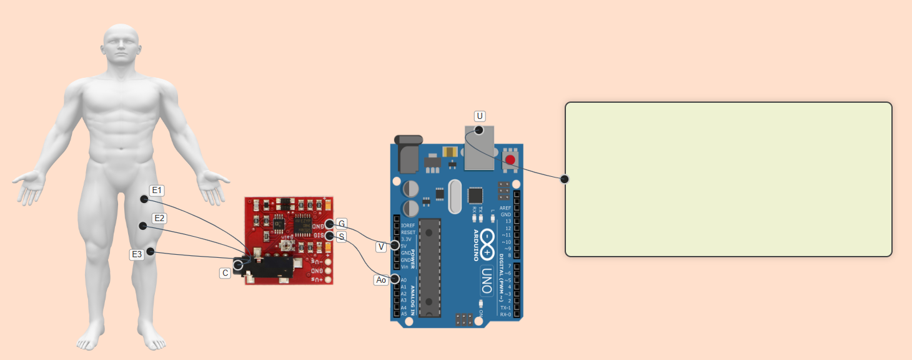
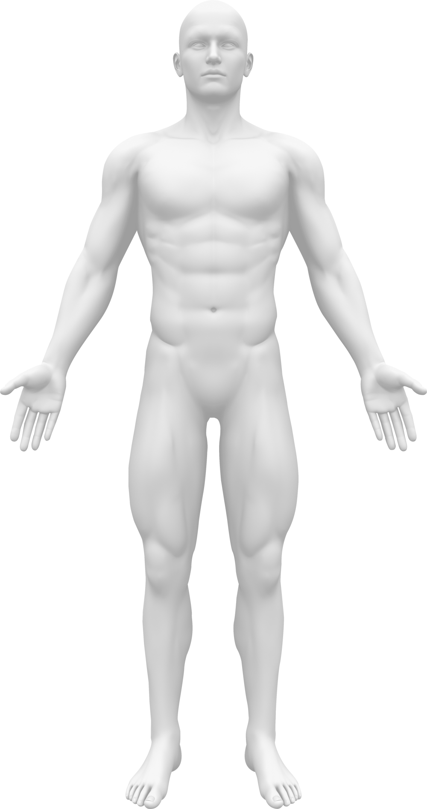
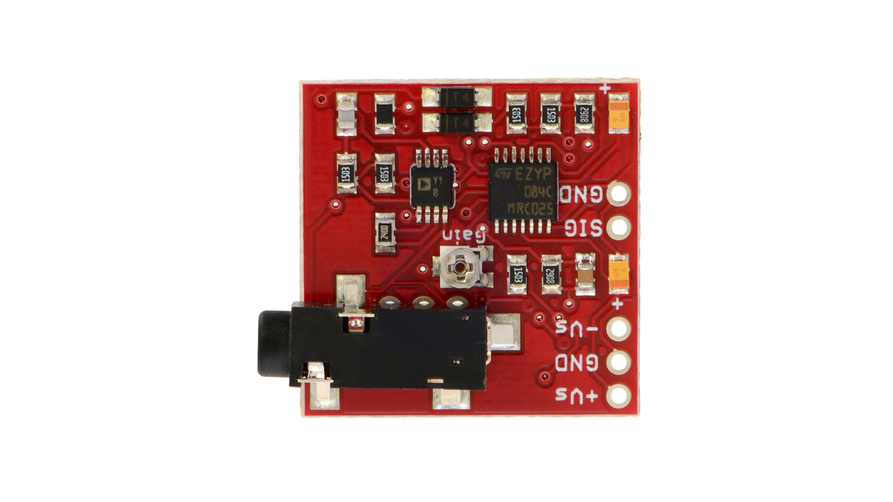

-
STEP 1 : 1. Connect the three electrodes E1,E2 and E3 to common point C of EMG sensor.
2. Connect the EMG sensor points G and S to the V and Ao points of Arduino respectively.
3. Connect U point of Arduino to graph Container.

STEP 2 : Click on check button to check for Correct Connections.
STEP 3 : If Connections are not correct click on reset button to start connections from starting.
STEP 4 : If Connections are correct then click on the Waveform Button for the output signals.
Gait button will appear, to get output signal click on button.
STEP 5 : Click on the print button to save the observation.

